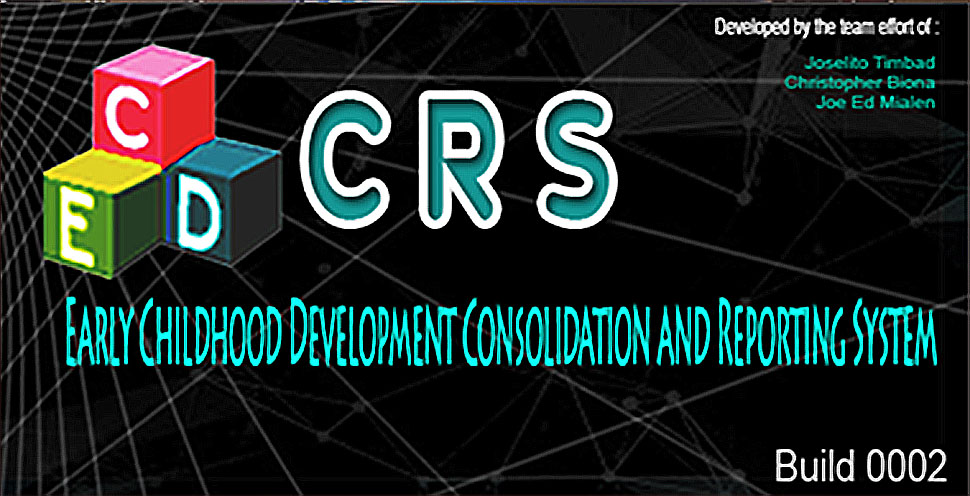

ECD CRS
Early Childhood Development Checklist E-Tool
Consolidation and Reporting System
DESCRIPTION
ECD E-TOOL Consolidation and Reporting System (ECD CRS) is free desktop application intended for efficient data gathering consolidation and reporting of data from ECD E-Tool 3 that can be utilized by the DepEd personnel from School to Division level. EDCCRS is a stand alone executable application that needs to be installed in your system. It doesn't require any third party commercial applications such as MS Excel, MS Access, even MS suites' runtimes, etc.
SPECIFICATIONS
- FILE SIZE: 15MB
- FILE SIZE WHEN INSTALLED: Expands from 40MB to 50MB when installed.
- Programming Language: Python
- Graphical User Interface(GUI) Framework: WxPython
- Stand-alone Desktop App
- Runs only on Windows OS, Builds for Mac or Linux are not available (We do not have access in these Operating System for now)
LICENSE
- Freeware
Price
- PhP 0.00 (Note: All of our files are not for sale. We are sharing it for free.)
TARGET END-USER
- ECD E-TOOL 4 aims to be utilised by any DepED personnel of the Republic of the Philippines.
SYTEM REQUIREMENTS
- Windows Operating System: Windows 7 to Windows 10
- Windows Operating System with x32 bit or x64bit processing architecture
- At least 1GB of memory (RAM)
- At least 40MB to 50MB of free disk space
INITIAL DATE RELEASED
- November 17, 2019
FEATURES
- Aggregates results collected directly from imported ECD E-Tool
- Build-in report generator
- Build-in printing system for report
- Has search facility and result can be exported to spreadsheet("Exceldfdf") format
DOCUMENTATION/TUTORIALS
- For instructions, manual or tutorial please click here.
File
| File | Version | Download Size | Download |
|---|---|---|---|
| ECDCRS_V1.1_setup.exe | Build 0002 | 15MB | Download |